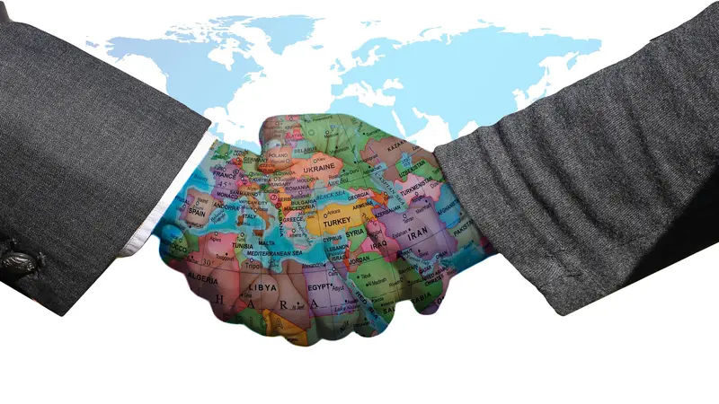
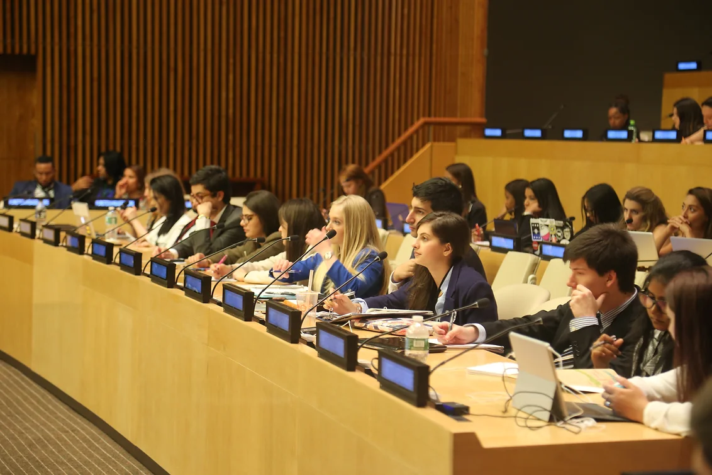
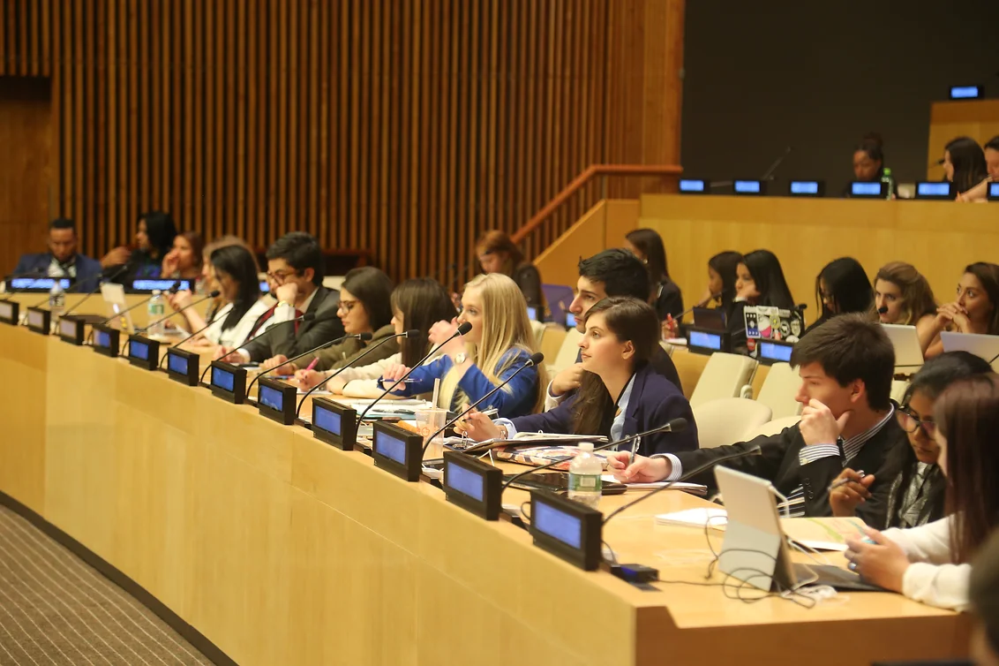

 

Kerja sama regional merujuk pada bentuk kerjasama antara negara-negara yang berada dalam kawasan geografis tertentu dengan tujuan untuk meningkatkan kesejahteraan bersama, memperkuat hubungan politik, sosial, ekonomi, dan keamanan di tingkat regional. Biasanya, kerja sama ini mencakup berbagai negara yang memiliki kesamaan sejarah, budaya, atau kepentingan, dan seringkali dilakukan melalui organisasi atau forum regional. Dalam kerja sama regional, negara-negara tersebut bekerja sama untuk menyelesaikan isu-isu yang bersifat regional, seperti perdagangan, perubahan iklim, pendidikan, masalah keamanan, dan lainnya.
Hubungan Kerja Sama antara Indonesia dan Sudan: Organisasi Konferensi Islam (OKI): Indonesia dan Sudan adalah anggota Organisasi Konferensi Islam (OKI), yang merupakan organisasi regional yang bertujuan memperkuat solidaritas di antara negara-negara berpenduduk Muslim. Melalui OKI, Indonesia dan Sudan dapat bekerja sama dalam menghadapi berbagai isu penting, seperti masalah politik, ekonomi, dan sosial yang memengaruhi dunia Islam. OKI juga berfungsi sebagai platform diplomatik bagi negara-negara Muslim untuk menyelesaikan perbedaan dan memperjuangkan kepentingan bersama dalam forum internasional. Uni Afrika (African Union - AU): Sudan adalah bagian dari Uni Afrika, sementara Indonesia memiliki hubungan yang baik dengan banyak negara Afrika melalui kerja sama bilateral dan multilateral. Indonesia mendukung banyak inisiatif yang diambil oleh AU, terutama dalam hal perdamaian dan pembangunan di kawasan Afrika. Dalam konteks ini, meskipun Indonesia tidak menjadi anggota AU, Indonesia sering terlibat dalam berbagai kegiatan yang berhubungan dengan Afrika, termasuk Sudan, di forum-forum internasional yang lebih besar seperti PBB dan OKI.
Kerja Sama dengan Negara-negara Afrika: Indonesia memiliki kebijakan untuk memperkuat hubungan dengan negara-negara di Afrika, termasuk Sudan, dalam bidang perdagangan, investasi, dan diplomasi. Melalui organisasi seperti Forum Asia-Afrika (AAF) yang pernah digagas pada konferensi Asia-Afrika, Indonesia turut mendorong kerjasama antarnegara Asia dan Afrika untuk menciptakan kesetaraan ekonomi dan sosial. Sudan dan Indonesia berperan dalam forum ini untuk membangun hubungan regional dan meningkatkan kerja sama antarnegara berkembang.
Kerja Sama Perdagangan dan Ekonomi di Kawasan: Indonesia, sebagai negara yang memiliki hubungan perdagangan dengan beberapa negara di Afrika, termasuk Sudan, dapat memperluas kerja sama regional dengan negara-negara Afrika lainnya. Meskipun Sudan dan Indonesia terletak di kawasan yang berbeda (Asia dan Afrika), keduanya dapat membangun konektivitas melalui organisasi perdagangan regional atau inisiatif ekonomi yang lebih luas. Indonesia juga berperan dalam mendukung pengembangan sektor ekonomi Afrika, termasuk perdagangan dan investasi, yang merupakan bagian dari kerja sama lebih luas di tingkat regional.
Diplomasi dan Bantuan Pembangunan: Dalam kerangka kerja sama regional, Indonesia dapat memberikan dukungan kepada Sudan dalam bidang pembangunan melalui bantuan teknis, pelatihan, atau pembangunan kapasitas yang disesuaikan dengan kebutuhan Sudan. Ini sejalan dengan kerja sama yang lebih besar antarnegara berkembang, di mana Indonesia aktif dalam berbagi pengalaman dan pengetahuan dengan negara-negara Afrika dalam rangka pembangunan regional.